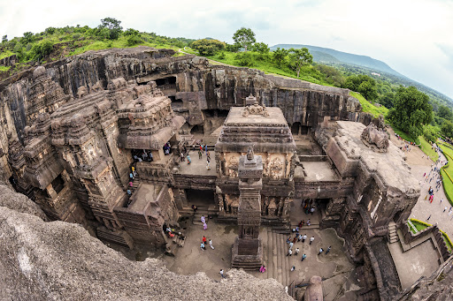

Ajanta Caves

The Ajanta and Ellora Caves are two distinct but related UNESCO World Heritage Sites located in Maharashtra, India, renowned for their ancient rock-cut architecture and Buddhist, Hindu, and Jain cave temples and monasteries. Here’s an overview of each:
Ajanta Caves:
History and Architecture
- Time Period: The Ajanta Caves date back to the 2nd century BCE to the 6th century CE and represent some of the finest examples of ancient Indian art and architecture.
- Buddhist Influence: The caves were primarily used as monastic retreats and worship halls for Buddhist monks.
- Rock-Cut Structures: Carved into the horseshoe-shaped rock surface of a cliff, the Ajanta Caves consist of 30 caves with intricately carved facades, pillars, and elaborate sculptures.
- Frescoes: Known for their exquisite wall paintings depicting scenes from the life of Buddha, Jataka tales (stories of Buddha’s previous lives), and various celestial beings. These paintings are considered masterpieces of Buddhist religious art.
Highlights
- Cave 1 (Vihara): Largest and most famous, featuring a grand facade and intricate carvings.
- Cave 26 (Chaitya): Notable for its large stupa and elaborate sculptures.
- Cave 17 (Hindu Influence): Unique for its depiction of Hindu deities alongside Buddhist themes, showing a transitional period in Indian religious art.
History and Architecture:
- Time Period: Ellora Caves span a longer period from the 5th century to the 10th century CE, encompassing Buddhist, Hindu, and Jain rock-cut temples and monasteries.
- Three Major Religions: The site reflects the religious harmony and cultural syncretism of ancient India, with 34 caves dedicated to Buddhism (12-17), Hinduism (13-29), and Jainism (30-34).
- Kailash Temple: Cave 16, also known as the Kailash Temple, is a masterpiece of Dravidian architecture dedicated to Lord Shiva. It is the largest single monolithic rock excavation in the world, carved from top to bottom with intricate sculptures and reliefs.
Highlights:
- Cave 1-12 (Buddhist): Known for their viharas (monasteries) and chaityas (prayer halls) with Buddhist iconography and sculptures.
- Cave 14-29 (Hindu): Features the Kailash Temple (Cave 16), as well as other temples dedicated to various Hindu deities like Shiva, Vishnu, and Durga.
- Cave 30-34 (Jain): Jain temples with intricately carved pillars and sculptures depicting Tirthankaras (Jain spiritual teachers).
Significance:
- **UNESCO World Heritage**: Both Ajanta and Ellora Caves are recognized for their cultural and historical significance, representing an unparalleled artistic achievement in rock-cut architecture.
- **Religious and Cultural Syncretism**: They illustrate the coexistence and mutual influence of Buddhism, Hinduism, and Jainism in ancient India.
Visiting Ajanta and Ellora Caves offers a profound insight into India’s rich heritage and artistic traditions, showcasing masterpieces of ancient rock-cut architecture and religious devotion.